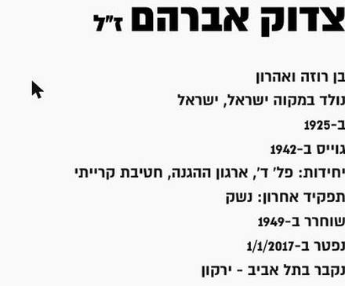
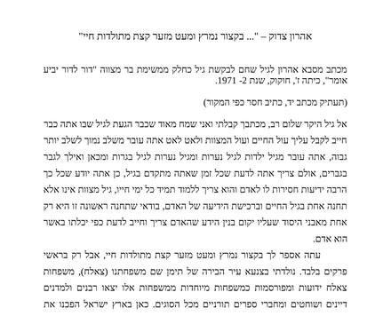
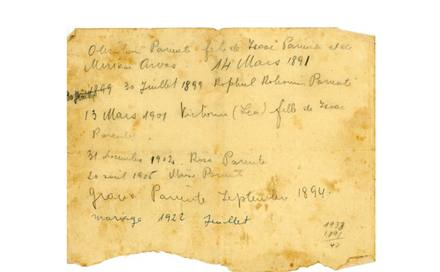
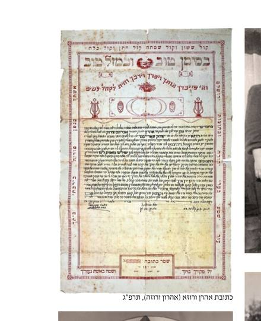
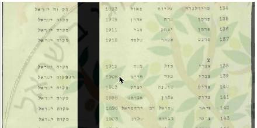
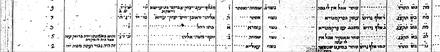
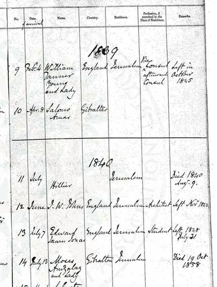
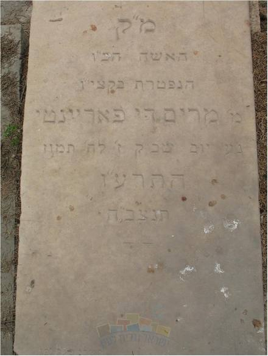

ידוע בוודאות מאומת
סולם הוודאות ומונחי המחקר — מה המילים האלה אומרות
עץ המשפחה
מקרא הצבעים
אברהם (נושא המחקר) ·
ההורים (רוזה ואהרון) ·
פריינטה ·
ארואס (Arwas) ·
צדוק / צאלח (תימן) ·
בני המשפחה.
קו מלא — קשר מתועד. קו מקווקו — קשר משוער או מסגרת־מוצא. סימן «?» אחרי תאריך — מועמד שטרם אומת.
גלילה אופקית בתוך המסגרת מציגה את העץ במלואו, וכפתורי ההגדלה שמעליה מגדילים את הכתב; בהדפסה הוא מקבל עמוד לרוחב משלו.
פתיחת העץ בעמוד נפרד ↗ציר הזמן
כל אירוע מציין עד כמה הוא מבוסס, ומפנה אל המסמך שעליו הוא נשען.
- 1833גיברלטר ← יפו
משפחת ארואס עולה מגיברלטר לארץ ישראל; מפקד 1855 רושם את שלמה ארואץ כמי שעלה בשנת תקצ"ג.
- 8.4.1839
«Salomo Aruas · Gibraltar» נרשם בפנקס נתיני בריטניה של הקונסוליה בירושלים — הרשומה הקדומה ביותר בשושלת.
- 1855יפו
מפקד מונטיפיורי רושם ביפו את שלמה ארואץ, בן 32, "סוחר ובאנקיר", את אשתו שמחה ואת שלושת בניהם.
- 1.1.1869יפו
יוסף ארואס בן שלמה נרשם בקונסוליה הבריטית ביפו, בן 24, ומקצועו "Saraff" — חלפן כספים.
- 1870מקווה ישראל
קרל נטר מייסד מטעם "כל ישראל חברים" את מקווה ישראל, בית הספר החקלאי הראשון בארץ ישראל.
- 31.12.1902מקווה ישראל
שושנה רוזה פריינטה, אמו של אברהם, נולדת במקווה ישראל; לידתה רשומה בכתב ידו הצרפתי של אביה יצחק.
- 1904צנעא
ברעב הגדול בצנעא מאבד אהרון צדוק, אביו של אברהם, את אמו ואת אחיו, וניצל לבדו כילד בן שש-שבע.
- 1914יפו
אהרון צדוק יורד מן האנייה בחוף יפו, חודשים אחדים אחרי פרוץ מלחמת העולם הראשונה.
- 8.7.1916תל אביב
סבתו מרים ארואס-פריינטה מתה במגפת הכולירה ונטמנת בבית העלמין טרומפלדור.
- 1920מקווה ישראל
אהרון צדוק הוא האופה הראשי ומנהל המאפייה של מקווה ישראל — תפקיד שימלא עד ראשית שנות השישים.
- 1925מקווה ישראל
אברהם צדוק נולד במקווה ישראל, בנם של אהרון צדוק ושושנה רוזה לבית פריינטה.
- 1942בן שמן · משמר העמק
מתגייס לפלמ"ח ומתאמן בפלוגה ד' "נטעים", באימונים בבן שמן ובמשמר העמק.
- 1948לוד ורמלה
במלחמת העצמאות משרת בחטיבת קרייתי, לוחם במרחבי לוד ורמלה, ומוסמך לנַשָּׁק.
- 1949מקווה ישראל
פנקס הבוחרים תש"ט רושם במקוה ישראל, בשורות עוקבות, את "צדוק אהרן בן אברהם" ואת "צדוק שושנה בת יצחק".
- 1.1.2017תל אביב
אברהם צדוק מת בגיל תשעים ואחת ונטמן בבית העלמין ירקון, במרחק נסיעה קצרה ממקום הולדתו.
המסמכים
לחיצה על תמונה פותחת את הסריקה המלאה; "בדוח" מוביל אל הקריאה המלאה של המסמך.








המקורות
כל קביעה בדף הזה נשענת על אחד המקורות שלהלן. כל ערך מוביל אל אינדקס המקורות שבדוח, ושם — קישור אל הרשומה בארכיון שממנה נלקחה ואל עותק שמור שלה.
- כרטיס החבר של אברהם צדוק — עמותת דור הפלמ"ח
- זיכרונות אהרון צדוק ומכתבו לנכדו, 1971/72
- ספר "משפחת פריינטה: מקוה ישראל", גיל שחם, 2021
- אתר מקווה ישראל — תולדות המוסד
- "למרחב", 20.4.1970 — משפחת פריינטה של מקווה ישראל
- פנקס הבוחרים תש"ט (1949), מקוה ישראל
- רישומי הקונסוליה הבריטית בארץ ישראל — ארואס ביפו, 1839–1903
- מפקד מונטיפיורי 1855, יפו — שלמה ואלעזר ארואץ
- «Register of British Subjects», יפו — גיליון הפתיחה
- פנקס תושבי ועד העיר ליהודי יפו, 1918–1919
- פנקס נתיני בריטניה בירושלים — «Salomo Aruas · Gibraltar»
- אוסף פריינטה ב"האלבום של ישראל" — אוסף 9700.0004
- עדות "סבתא ויקטוריה" — ויקטוריה בכר לבית פריינטה, 11.3.1991
- "למרחב", 17.4.1960 — הראיון עם אהרון צדוק במאפיית מקווה ישראל